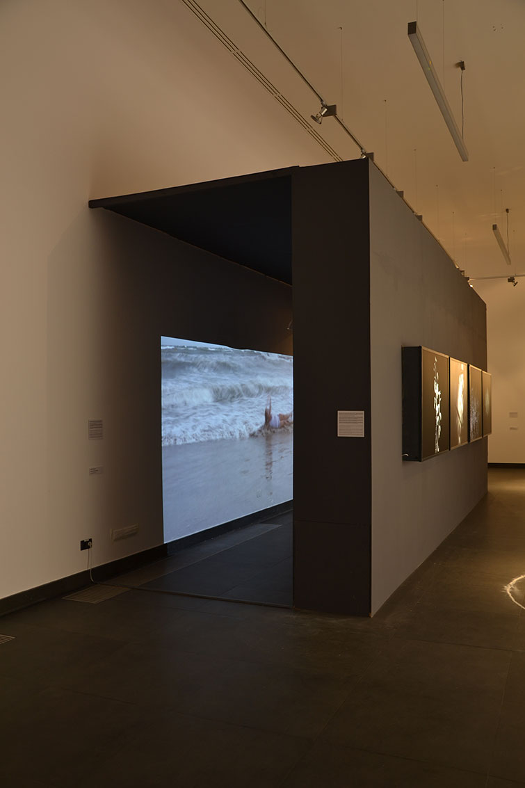
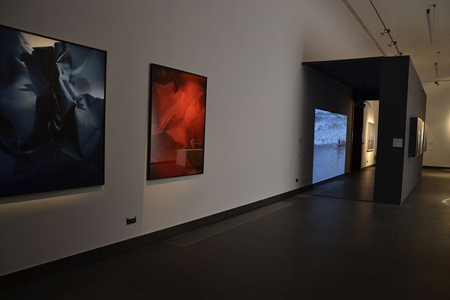
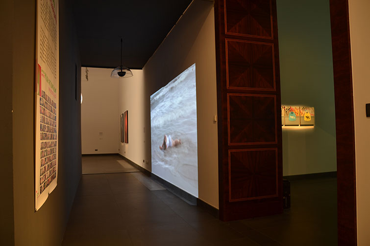
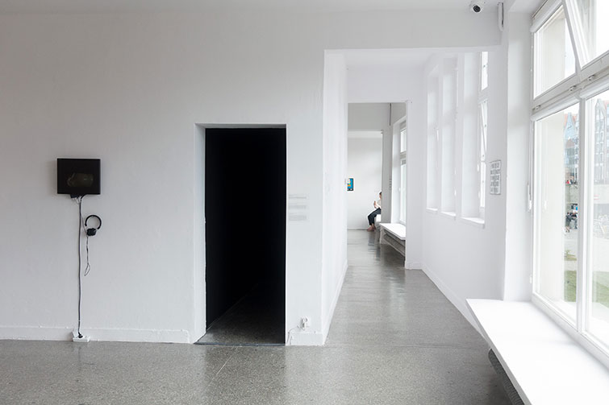
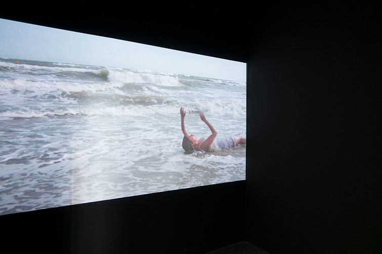
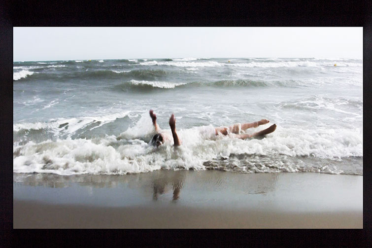
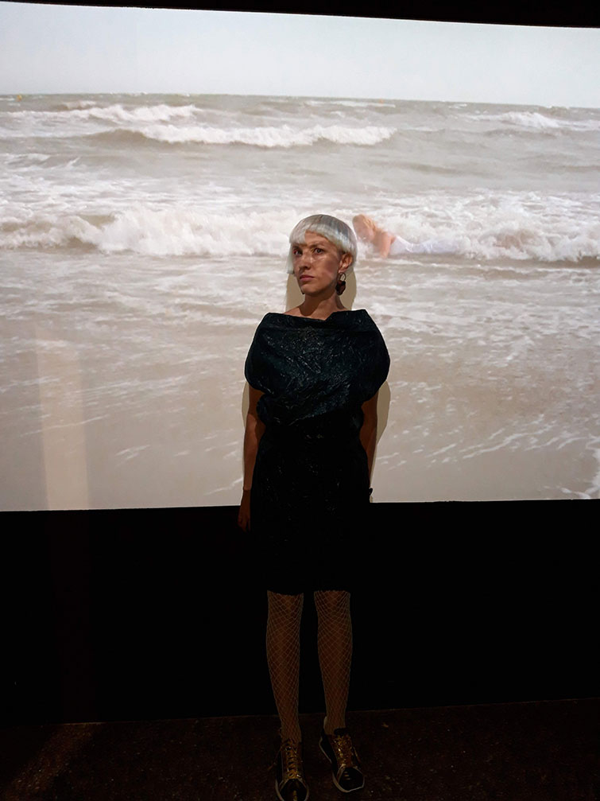

FAZA FALI







FAZA FALI - faza drgan punktu osrodka, w ktorym rozchodzi sie fala. Performance dokamerowy bedacy rozwinieciem i zarowno kontynuacja wczesniejszego dzialania performance, ktore przeprowadzilam na festiwalu w Sokolowsku w 2011 roku pt. "Histeria"
Morze Srodziemne, poludniowa Francja, 2014
Podziekowania dla: Krzysztofa Maniaka i Anny Cicheckiej
Performance byl prezentowany jako wielkoekranowa instalacja na Biennale Mediations na wystawie pt. "Granice Globalizacji" w Poznaniu w 2014.
Praca byla prezentowana rowniez na wystawie pt: "Tylko Zepsute Zegary Pokazuja Dokladny Czas" z okazji 10-lecia Gdanskiej Galerii Miejskiej w 2019
fot. Zuzanna Glod i Pawel Sosnowski